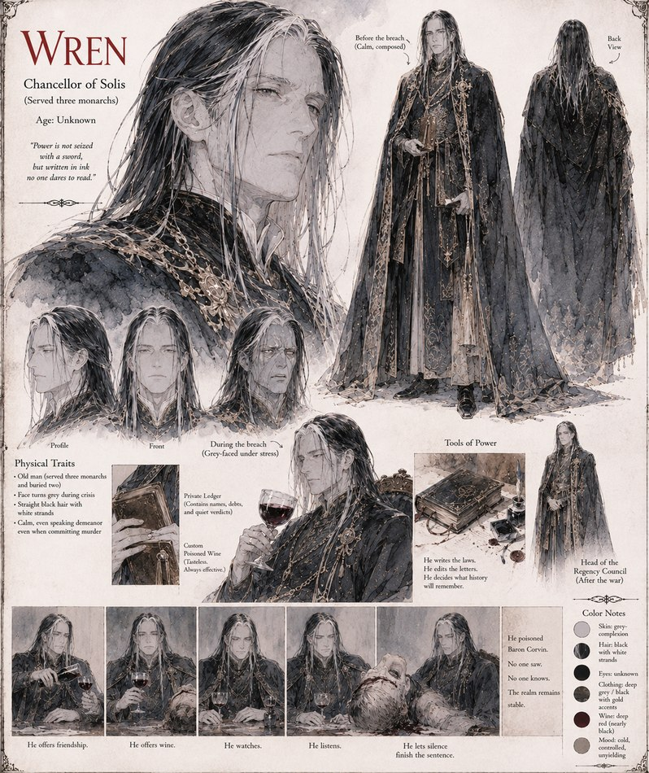

Wren
Chancellor of Solis · served three monarchs · age unknown
Chancellor of Solis through three monarchs' reigns, calm even while committing murder. He keeps a private ledger of names, debts, and verdicts no one else is permitted to read, and when Baron Corvin's scheming is finally laid bare, Wren answers it with a cup of custom poisoned wine rather than a public trial. He ends the war as Head of the Regency Council, ruling both crowns for eleven years afterward — and privately, in letters he can't quite bring himself to burn, wondering whether the heels were ever really about vanity at all.
“Power is not seized with a sword, but written in ink no one dares to read.”
Appears in The Iron Stiletto War